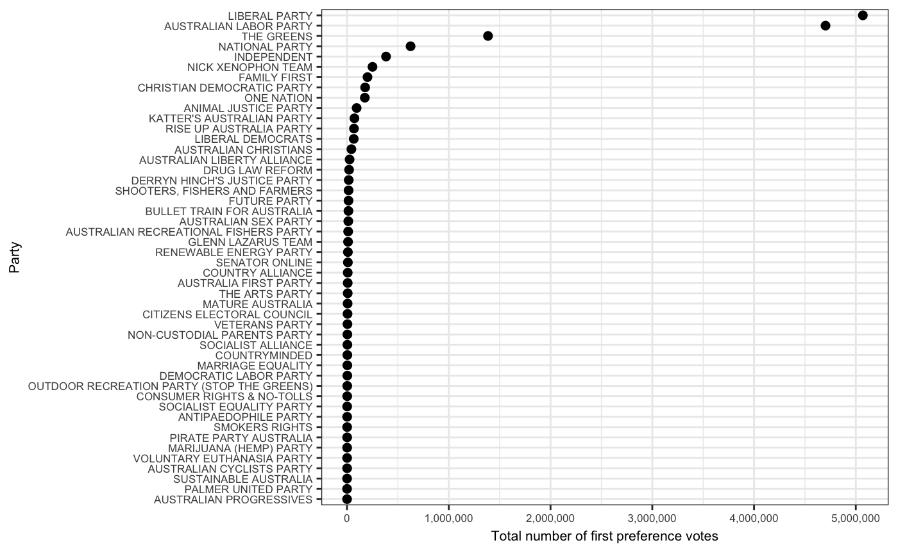
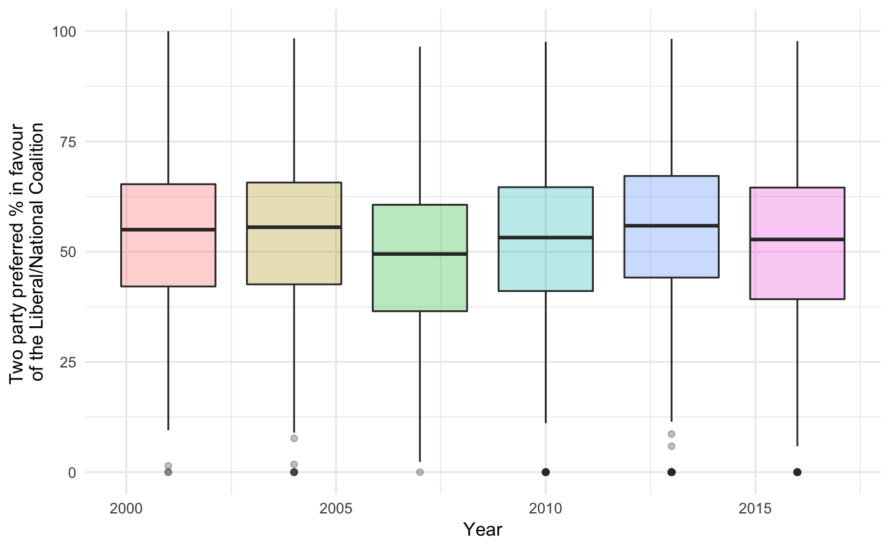
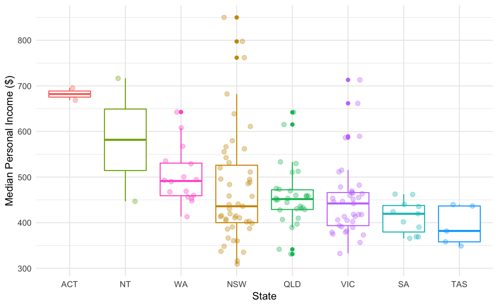
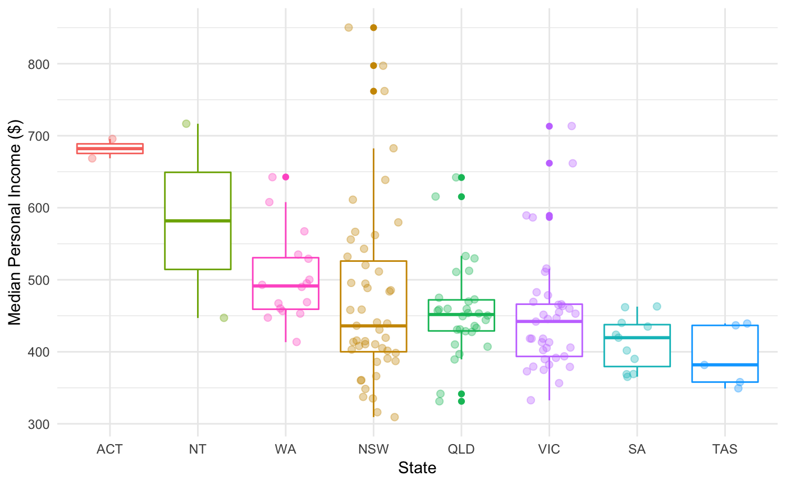
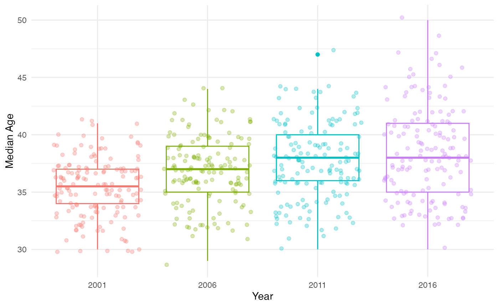
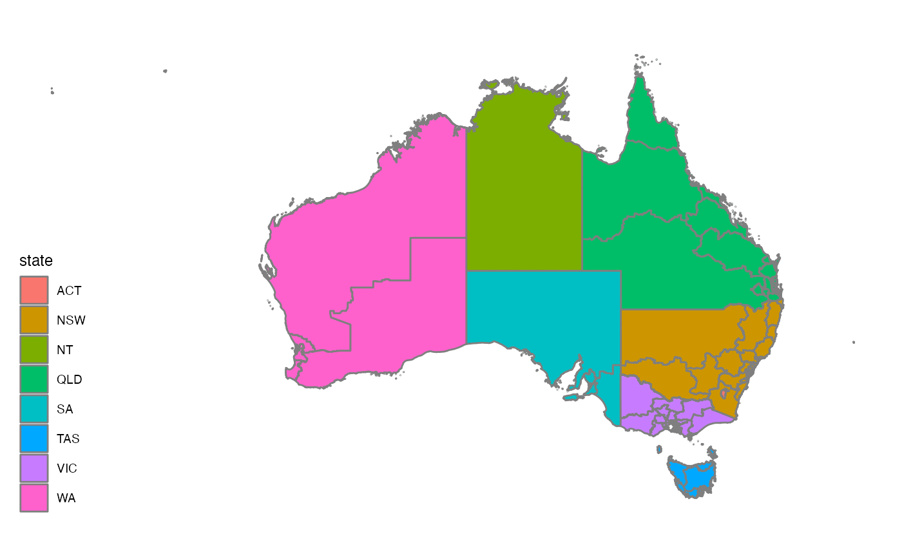
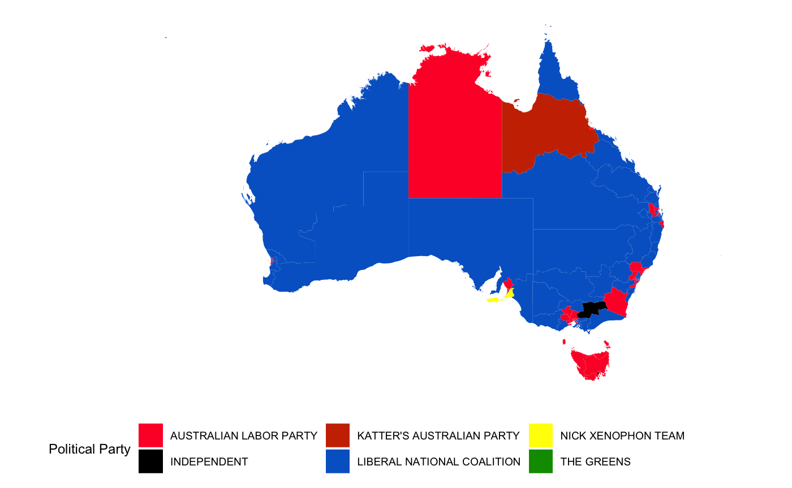
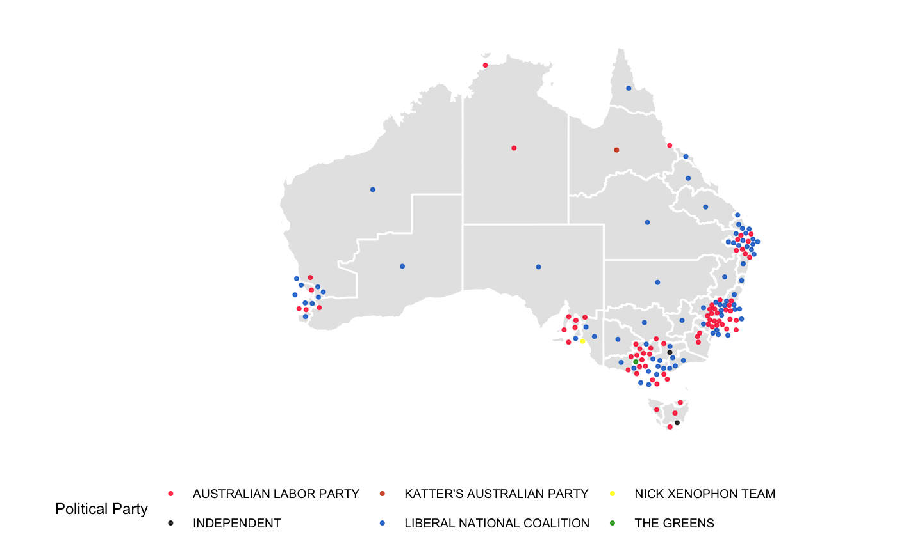

vignettes/eechidna-intro.Rmd
eechidna-intro.Rmdeechidna (Exploring Election and Census Highly Informative Data Nationally for Australia) is an R package that makes it easy to look at the data from the Australian Federal elections and Censuses that occurred between 2001 and 2019. An Australian Federal election typically takes place every three years (2001, 2004, 2007, 2010, 2013, 2016 and 2019), and a Census of Population and Housing is conducted every five years (2001, 2006, 2011, 2016). The data in this package includes voting results for each polling booth and electoral division (electorate), Census information for each electorate and maps of the electorates that were in place at the time of each event. All data in this package is obtained from the Australian Electoral Commission, the Australian Bureau of Statistics and the Australian Government.
This vignette documents how to access these datasets, and shows a few typical methods to explore the data.
Each electoral division has a unique ID (UniqueID) that can be used to match together Censuses and elections.
library(knitr)
library(dplyr)
library(eechidna)
data(tpp16)
data(abs2016)
# Join 2016 election and Census
data16 <- left_join(tpp16 %>% select(LNP_Percent, UniqueID), abs2016, by = "UniqueID")
# See what it looks like
data16 %>%
select(LNP_Percent, DivisionNm, Population, Area, AusCitizen, MedianPersonalIncome, Renting) %>%
head() %>%
kable| LNP_Percent | DivisionNm | Population | Area | AusCitizen | MedianPersonalIncome | Renting |
|---|---|---|---|---|---|---|
| 41.54 | CANBERRA | 196037 | 2004.2730 | 85.47927 | 695.4141 | 29.74457 |
| 36.11 | FENNER | 202955 | 460.3633 | 83.64317 | 668.7201 | 33.79648 |
| 51.44 | BANKS | 155806 | 49.4460 | 80.66827 | 440.7940 | 31.32000 |
| 41.70 | BARTON | 172850 | 39.6466 | 72.40498 | 436.0027 | 37.23520 |
| 59.72 | BENNELONG | 168948 | 58.6052 | 74.59277 | 495.5510 | 36.09845 |
| 66.45 | BEROWRA | 145136 | 749.6359 | 87.35600 | 542.7789 | 14.50767 |
For each of the six elections, three types of votes are recorded: - First preference votes: a tally of primary votes (as Australia has a preferential voting system). These datasets are labelled fp (e.g. fp16 for 2016). - Two party preferred vote: a measure of preference between the two major parties - the Australian Labor Party (Labor) and the Liberal/National Coalition (Liberal). These are labelled tpp (e.g. tpp16 for 2016). - Two candidate votes: a measure of preference between the two leading candidates in that electorate. These are labelled tcp (e.g. tcp16 for 2016).
The same voting results are available for each polling booth (of which there are around 7500). This data is obtained by calling one of the three functions; firstpref_pollingbooth_download, twoparty_pollingbooth_download and twocand_pollingbooth_download, all of which pull (large) datasets from github. Geocoordinates for each polling booth are also detailed in these datasets (when available).
Let’s have a look at some of the results from the 2016 Federal election.
The data can be summarized to reveal some basic details about the election. Start by reproducing the overall result of the election by finding out which party won the most electorates according to the two candidate preferred votes.
who_won <- tcp16 %>%
filter(Elected == "Y") %>%
group_by(PartyNm) %>%
tally() %>%
arrange(desc(n))
# Inspect
who_won %>%
kable()| PartyNm | n |
|---|---|
| AUSTRALIAN LABOR PARTY | 69 |
| LIBERAL PARTY | 66 |
| NATIONAL PARTY | 10 |
| INDEPENDENT | 2 |
| KATTER’S AUSTRALIAN PARTY | 1 |
| NICK XENOPHON TEAM | 1 |
| THE GREENS | 1 |
We see that Liberal/National Coalition won with 76 seats, which is just enough to secure a majority in the House of Representatives.
An alternative way to evaluate the outcome of the election is by counting the number of ordinary first preference votes for each party (not including postal votes, preference flows, etc.). Here we can find the total number of ordinary votes for each party.
total_votes_for_parties <- fp16 %>%
select(PartyNm, OrdinaryVotes) %>%
group_by(PartyNm) %>%
dplyr::summarise(total_votes = sum(OrdinaryVotes, rm.na = TRUE)) %>%
ungroup() %>%
arrange(desc(total_votes))
# Plot the total votes for each party
library(ggplot2)
ggplot(total_votes_for_parties,
aes(reorder(PartyNm, total_votes),
total_votes)) +
geom_point(size = 2) +
coord_flip() +
scale_y_continuous(labels = scales::comma) +
theme_bw() +
ylab("Total number of first preference votes") +
xlab("Party") +
theme(text = element_text(size=8))
The function twoparty_pollingbooth_download() downloads the two party preferred vote for each polling booth in each of the six elections. Boxplots can be used to compare the distributions of this vote across the six elections.
# Download TPP for all elections
tpp_pollingbooth <- twoparty_pollingbooth_download()
# Plot the densities of the TPP vote in each election
tpp_pollingbooth %>%
filter(StateAb == "NSW") %>%
ggplot(aes(x = year, y = LNP_Percent, fill = factor(year))) +
geom_boxplot(alpha = 0.3) +
theme_minimal() +
guides(fill=F) +
labs(x = "Year", y = "Two party preferred % in favour \nof the Liberal/National Coalition")
There are four Censuses included in this package, which consist of 85 variables relating to population characteristics of each electorate. The objects abs2001, abs2006, abs2011 and abs2016 correspond with each of the four Censuses. A description of each variable can be found in the corresponding help files.
Let’s have a look at data from the 2016 Census held in abs2016.
# Dimensions
dim(abs2016)## [1] 150 85
# Preview some of the data
abs2016 %>%
select(DivisionNm, State, Population, Area, AusCitizen, BachelorAbv, Indigenous, MedianAge, Unemployed) %>%
head %>%
kable| DivisionNm | State | Population | Area | AusCitizen | BachelorAbv | Indigenous | MedianAge | Unemployed |
|---|---|---|---|---|---|---|---|---|
| ADELAIDE | SA | 163442 | 76.0361 | 77.30999 | 34.32088 | 1.0554203 | 36 | 8.1 |
| ASTON | VIC | 136018 | 103.4133 | 85.04242 | 22.90449 | 0.4514108 | 39 | 5.6 |
| BALLARAT | VIC | 154483 | 4627.2702 | 89.27649 | 17.89707 | 1.3334801 | 40 | 6.5 |
| BANKS | NSW | 155806 | 49.4460 | 80.66827 | 25.84467 | 0.8260272 | 38 | 6.2 |
| BARKER | SA | 149502 | 58548.5473 | 88.64229 | 8.75372 | 2.6307340 | 44 | 5.8 |
| BARTON | NSW | 172850 | 39.6466 | 72.40498 | 29.42181 | 0.6988719 | 35 | 6.6 |
We can visualize measures by splitting the electorates into their respective states to gain insight into how states compare with regards to income and unemployment.
ggplot(data = abs2016,
aes(x = reorder(State, -Unemployed),
y = Unemployed,
colour = State)) +
geom_boxplot() +
labs(x = "State",
y = "% Unemployment") +
theme_minimal() +
theme(legend.position = "none") 
Adding geom_jitter gives us more details about a distribution.
ggplot(data = abs2016,
aes(x = reorder(State, -MedianPersonalIncome),
y = MedianPersonalIncome,
colour = State)) +
geom_boxplot() +
geom_jitter(alpha = 0.35,
size = 2,
width = 0.3) +
theme_minimal() +
theme(legend.position = "none") +
labs(x = "State", y = "Median Personal Income ($)")
Australia’s ageing population is clearly seen from observing the distribution of median age across the four Censuses.
# Load
data(abs2011)
data(abs2006)
data(abs2001)
# Bind and plot
bind_rows(abs2016 %>% mutate(year = "2016"), abs2011 %>% mutate(year = "2011"), abs2006 %>% mutate(year = "2006"), abs2001 %>% mutate(year = "2001")) %>%
ggplot(aes(x = year, y = MedianAge, col = year)) +
geom_boxplot() +
geom_jitter(alpha = 0.3) +
guides(col = F) +
labs(x = "Year", y = "Median Age") +
theme_minimal()
Electoral divisions change regularly, so many electorates represent different regions from one election to the next. A consequence of this is that the electorate Census data (for example, in 2011) may not align with those in place for any election. As a resource for addressing this problem, and also for plotting visualizations of Australia, a map of electorates for the years 2001, 2004, 2006, 2007, 2010, 2011, 2013 and 2016 are included. The nat_map objects (e.g. nat_map16) are data frames that contain the coordinates of each electoral polygon, and can be plotted using ggplot2 graphics. The accompanying nat_data object (e.g. nat_data16) contains some information about each electoral polygon. These objects can be loaded using the nat_map_download and nat_data_download functions, respectively.
As an example, let’s plot a map of electorates in the 2016 election.
library(ggthemes)
nat_map16 <- nat_map_download(2016)
nat_data16 <- nat_data_download(2016)
ggplot(aes(map_id=id), data=nat_data16) +
geom_map(aes(fill=state), map=nat_map16, col = "grey50") +
expand_limits(x=nat_map16$long, y=nat_map16$lat) +
theme_map() + coord_equal()
We can fill each electorate by the victorious party in the 2016 election.
# Get the electorate winners
map.winners <- fp16 %>% filter(Elected == "Y") %>%
select(DivisionNm, PartyNm) %>%
merge(nat_map16, by.x="DivisionNm", by.y="elect_div")
# Grouping
map.winners$PartyNm <- as.character(map.winners$PartyNm)
map.winners <- map.winners %>% arrange(group, order)
# Combine Liberal and National parties
map.winners <- map.winners %>%
mutate(PartyNm = ifelse(PartyNm %in% c("NATIONAL PARTY", "LIBERAL PARTY"), "LIBERAL NATIONAL COALITION", PartyNm))
# Colour cells to match that parties colours
# Order = Australian Labor Party, Independent, Katters, Lib/Nats Coalition, Palmer, The Greens
partycolours = c("#FF0033", "#000000", "#CC3300", "#0066CC", "#FFFF00", "#009900")
ggplot(data=map.winners) +
geom_polygon(aes(x=long, y=lat, group=group, fill=PartyNm)) +
scale_fill_manual(name="Political Party", values=partycolours) +
theme_map() + coord_equal() + theme(legend.position="bottom")
However, the Australian electoral map is not conducive to chloropleth map, because most of the population concentrate in the five big cities, Sydney, Melbourne, Brisbane, Adelaide and Perth, which means that there are lot of very geographical tiny regions that contribute substantially to the house of representative composition. An alternative is to plot a dorling cartogram, where each electorate is represented by a circle, approximately in the geographic center of each electorate, with an underlying map. The major population centers need to have their center locations ballooned to make this feasible visually. The coordinates corresponding for the dorling cartogram have been pre-processed and correspond with the variables x and y in the nat_data datasets distributed in this package. These can be reproduced using the aec_add_carto_f function in the package.
A better approach would be to use a cartogram to display the election results, which maintains the geographic location but make the sizes of the electorate polygons approximately equal. This is very hard to perfect for Australia because the size differential between electorates is huge, resulting in a cartogram where all sense of geography is demolished. This data is used to create the display of electoral results below.
# Get winners
cart.winners <- fp16 %>% filter(Elected == "Y") %>%
select(DivisionNm, PartyNm) %>%
merge(nat_data16, by.x="DivisionNm", by.y="elect_div")
# Combine Liberal and National parties
cart.winners <- cart.winners %>%
mutate(PartyNm = ifelse(PartyNm %in% c("NATIONAL PARTY", "LIBERAL PARTY"), "LIBERAL NATIONAL COALITION", PartyNm))
# Plot dorling cartogram
ggplot(data=nat_map16) +
geom_polygon(aes(x=long, y=lat, group=group),
fill="grey90", colour="white") +
geom_point(data=cart.winners, aes(x=x, y=y, colour=PartyNm), size = 0.75, alpha=0.8) +
scale_colour_manual(name="Political Party", values=partycolours) +
theme_map() + coord_equal() + theme(legend.position="bottom")
An interesting exercise is to see how we can model electorate voting outcomes as a function of Census information. In the years 2001 and 2016 both a Census and election occur. The Australian Bureau of Statistics aggregate Census information to electoral boundaries that exactly match those in the election for these years, so we can join this data together and fit some models.
Let’s look at modelling the two party preferred vote (in favour of the Liberal party).
# Join
data16 <- left_join(tpp16 %>% select(LNP_Percent, UniqueID), abs2016, by = "UniqueID")
# Fit a model using all of the available population characteristics
lmod <- data16 %>%
select(-c(ends_with("NS"), Area, Population, DivisionNm, UniqueID, State, EmuneratedElsewhere, InternetUse, Other_NonChrist, OtherChrist, EnglishOnly)) %>%
lm(LNP_Percent ~ ., data = .)
# See if the variables are jointly significant
library(broom)
lmod %>%
glance %>%
kable| r.squared | adj.r.squared | sigma | statistic | p.value | df | logLik | AIC | BIC | deviance | df.residual | nobs |
|---|---|---|---|---|---|---|---|---|---|---|---|
| 0.9219191 | 0.8662752 | 4.137718 | 16.56821 | 0 | 62 | -385.0079 | 898.0158 | 1090.696 | 1489.502 | 87 | 150 |
We see that electoral socio-demographics from the Census are jointly significant in predicting the two party preferred vote.
# See which variables are individually significant
lmod %>%
tidy %>%
filter(p.value < 0.05) %>%
arrange(p.value) %>%
kable| term | estimate | std.error | statistic | p.value |
|---|---|---|---|---|
| Extractive | 1.2506612 | 0.3362580 | 3.719350 | 0.0003531 |
| Indigenous | 1.1248769 | 0.3751568 | 2.998418 | 0.0035377 |
| DeFacto | -6.0210283 | 2.0941333 | -2.875189 | 0.0050757 |
| DiffAddress | 0.8951707 | 0.3276409 | 2.732171 | 0.0076188 |
| CurrentlyStudying | 3.0498940 | 1.1328889 | 2.692139 | 0.0085147 |
| LFParticipation | 2.0806590 | 0.7855014 | 2.648829 | 0.0095911 |
| NoReligion | 1.3757595 | 0.5388697 | 2.553047 | 0.0124219 |
| ManagerAdminClericalSales | 1.8408868 | 0.7387002 | 2.492062 | 0.0145963 |
| HighSchool | 1.0138777 | 0.4174922 | 2.428495 | 0.0172204 |
| Couple_NoChild_House | 6.0945298 | 2.6534172 | 2.296861 | 0.0240282 |
| BachelorAbv | -1.8916490 | 0.8523159 | -2.219422 | 0.0290591 |
| Born_SE_Europe | -2.6681228 | 1.2439691 | -2.144846 | 0.0347527 |
| Finance | 1.5858345 | 0.7494209 | 2.116080 | 0.0371952 |
| Distributive | 1.0737711 | 0.5168930 | 2.077357 | 0.0407169 |
| Couple_WChild_House | 5.7184575 | 2.7555012 | 2.075288 | 0.0409129 |
| Unemployed | 2.0667592 | 1.0187605 | 2.028700 | 0.0455466 |
Many variables are individually significant too.
The 2004, 2007, 2010 and 2013 elections do not have a Census that directly match. Instead of matching these elections with a Census in neighbouring years, we have imputed Census data to correspond with the both time of the election and the electorate boundaries in place. This uses the most disaggregate Census data available (Statistical Area 1). This was done using an areal interpolation method over space and linear interpolation over time, via the allocate_electorate and weighted_avg_census_sa1 functions in this package.
For the 2019 election, because there only exists a Census before (2016) and not after (as of Nov, 2019), we do an areal interpolation of the 2016 SA1 Census data.
The resultant (imputed) Census objects are abs2004, abs2007, abs2010, abs2013 and abs2019. They include all of the variables in the other Census objects, aside from population, area, state and question non-response.
Please see the vignettes on our webpage. These detail the procedures used to obtain the election data, Census data and electorate maps, as well as the Census imputation method.